演出資訊
演出的話
嘉義高中管樂隊歷史悠久，幾乎是與嘉義高中一同成長與茁壯。七十二年來，樂隊的學生完成了無數次校內外各種勤務以及表演活動，近年來，在政府積極倡導「心靈改革」與「藝術生活」以及嘉義市政府積極推動「藝術社區化、社區藝術化」與大力支持各項管樂節慶的推波助瀾之下，嘉義高中管樂隊有幸成為政策的直接受惠者，而樂隊水準的提昇更隨著管樂隊朝制度化與專業化的發展而成為雲嘉地區屬一屬二之管樂隊。
音樂帶給人們心靈上的喜樂與平安，能夠洗滌凡事的憂愁與哀傷，透過曼妙的音符，使人類的生活更加祥和，人心更加平靜。樂隊七十二年來帶給嘉義高中無數的音樂饗宴與豐富的精神生活，也回饋給社會相同悠揚與美好的音樂生活。舉辦校友聯合音樂會已經十九年了，每年都會有許多校友積極主動地參與，重溫從前在學校生活以及在樂隊練習的快樂時光，而校友聯合音樂會是嘉義高中管樂隊七十二年來的縮影，不但帶給社會更豐富的精神生活，也傳承著嘉義高中「質實剛健」的精神。
願這場音樂會，能夠帶給您一些感動！
嘉義高中校長 何經
2003年8月24日
管樂．王者．夢
11種樂器的組合68個人的努力
157小時的加練4個人的夢想
只為了帶給您5400秒的感動
嘉義高中管樂隊簡介
嘉義高中管樂隊成立於民國二十年，七十一年來培育了無數的音樂人才。自民國六十五年台灣區音樂比賽高中職組比賽優等之後，迭有佳績、得獎無數。
2001年三月更受日本濱松市國際管樂節邀請赴日，參與活動演出；此外，本隊在校生也常受邀出席各項活動演出，且每次皆能圓滿達成、廣受好評，實為本團隊員們不斷努力所得到的成果。
嘉義高中管樂隊的同學們，平日忙於功課、承擔升學的壓力外，在參與樂隊的過程中接受嚴格的要求。學長制度的運作下，學長們學習著如何愛護、指導、管理學弟妹，學弟妹們學習如何尊敬、服從學長；行政管理方面，由於學校方面的充分授權，制度的建立、修正與貫徹，隊直幹部的職權分配與事務推動，甚至龐大的開支經費，皆由同學們自行統籌辦理；音樂方面則由指導老師從基本教材的選擇、音樂會的規劃、演奏曲目的合奏指導無不竭盡心力仔細教導，祈使同學們在音樂素養上能夠獲得助益，並在生活中能有正當的活動提供調劑和紓解。如此，期許嘉義高中管樂隊的各位同學們藉由參加樂隊，在做人處世與品行修養上皆有足堪傲人的典範。
自民國四十年起，每年暑假舉辦校友暨在校生聯合演奏會，一來聯絡感情、二來校友們將個人在各大專院校樂團所吸收的演奏技巧，利用暑假返回母校，指導學弟妹們並參加校友聯合演奏會的演出，使得本隊隊員之演奏技巧有長足的進步。本隊隊員特別犧牲假期來參加集訓，為的是以音樂來回饋社會，使愛好音樂的朋友們能有高尚正當的休閒活動。
當然還有其他各界的菁英，如行政院長、主任、醫師、新聞記者、廣播節目製作人、職業歌手、法界人士等，顯示嘉義高中管樂隊校友團多年持續不墜的的素質與水準。
我們用管樂刻寫歷史，我們用管樂璀璨青春，我們用管樂豐富生命；把「演奏好的音樂、並將音樂演好」作為努力的起點與終點，顯然這是一段漫長的道路。
指揮與獨奏
演出曲目與曲目介紹
上半場
- 瑪土撒拉II Mathuselah II田中賢
瑪土撒拉（Methuselah）是舊約聖經創世紀篇中的一位傳說活到九百六十九歲的長壽者，引申為「長壽的人」。作曲家以三種不同的手法呈現時空穿越的情境－現代、祭典、古聖歌，採用電影中常見的「倒敘法」，將整個時間扭轉過來。全曲共分三段，第一段以現代音樂的語法展現不同於傳統的管樂色彩，第二段以打擊為主，並有強烈的日本傳統祭祀的磅礡氣勢，第三段則採中世紀「葛利果聖歌」（Gregorian Chant）式的旋律。作曲家特別強調，在音樂中的管樂與打擊的協奏模式，代表著理性與感性的對抗，也代表了在人類藝術的軌跡中，古典與浪漫精神相互的消長所呈現出來多元的藝術風貌。（顏崇勝）
- "哈比人"選自交響曲第一號"魔戒" "Hobbits" from Symphony No.1 "The Lord of the Rings"Johan de Meji／約翰．德．梅吉
原曲共分五大段，其中“哈比人”是最後一段，音樂表現劇中“哈比人”謹慎樸實且樂觀的性格。為了表現劇中末章節「灰港岸」（The Grey Havens）中，在收復「夏爾」（Shar）之後，「佛羅多」（Frodo）與「甘道夫」（Gandalf）乘著帆船消失在地平線上的氣氛，作者以一種祥和幾近是寧靜的方式而非大多數的曲子所用的壯闊的聲勢結束。（顏崇勝）
- 神隱少女久石讓、木村弓 作曲／小島里美 編曲
這是由日本動畫大師「宮崎駿」在2001年所製作的經典作品，編曲者從中擷取六段具有代表性的音樂結合成一曲，這六首分別是「在某日的河川」、「在某日的夏天」、「鍋爐蟲」、「辛勤的工作」、「再次」與「永恆」，而末段的永恆，原曲即是輕快的6/8拍子樂曲。（顏崇勝）
- 巴西節慶 BrasilianaJan Van der Roost／珍凡．德．盧斯特
Jan Van der Roost 是一位廣受歡迎的現代作曲家，他的作品十分廣泛，包括銅管樂隊、鋼琴與交響樂團，而他的管樂作品受到許多人讚賞。這首「巴西節慶」便是其中之一，樂曲由三段拉丁風格的舞曲組成，分別是「恰恰舞」、「加力騷舞」、「森巴舞」。曲風輕鬆自然，配器生動且有活力，是一首值得回味的小品。（王騰寬）
- c小調豎笛小協奏曲作品26 Concertino for Clarinet Op.26Carl Maria von Weber／Arr. By M.L. Lake／卡爾．馬利亞．馮．韋伯／雷克 編曲／獨奏：蕭芳照
這一首豎笛小協奏曲於1811年首演於慕尼黑，前往聆賞的巴伐利亞國王，聆聽後大受感動，委託韋伯寫兩首新的豎笛協奏曲。這一首C小調的小協奏曲，有三個樂章，第一樂章具有引子功能，屬短小樂章，自由寫成，不停止直接進入第二樂章。第二樂章行板，降E大調2/2拍子，採主題與四個變奏的型式，一開始豎笛吹出主題後，開始第一變奏，豎笛將主旋律給予裝飾變奏，第二變奏，豎笛的音樂律動更為細膩，最後出現管絃樂的間奏，音樂力度削弱，速度減慢，以後由豎笛與法國號、定音鼓單獨自由地返回主題，靜靜地結束此樂章。第三樂章是華麗的快板，豎笛與樂團彼此競奏，充分展現出豎笛炫麗的演奏技巧，全曲結束在高昂的樂音。
下半場
- 嶄新的一日 Dawn of a New DayJames Swearingen／詹姆士．史威林金
作者史威林金於1991年受美國第三特區樂隊指導之委託創作，1992年首演。作者在音樂中描寫都市生活的一天，第一聲強烈的信號代表著旭日東昇的瞬間，而其後持續的和聲轉換與節奏變化，不僅帶領聽眾進入作者的想像世界，也與作者一同感受在都市叢林中每一日繁忙卻充實的生活。（顏崇勝）
- 交響舞曲第三號"節慶" Symphonic Dance No.3 "Fiesta"Clifton Williams／克里夫頓．威廉士
"Fiesta"是拉丁美洲一種熱鬧非凡的慶典，在這個慶典中，大街小巷充滿熱鬧的人群，也有街頭樂隊、奇裝異服的各式各樣的人，甚至還有鬥牛。作曲家「克里夫頓．威廉士」（Clifton Williams）描寫此種景象的手法也相當新穎，他以交迭出現的五拍與四拍、快板與慢板、強奏與弱音以及現代的管樂語法，成功地營造出拉丁美洲特有的慶典氣氛。（顏崇勝）
- 美國風情畫第七號 American Graffiti VII岩井直博
岩井直博向來擅長於改編各國著名的旋律或是民謠，這首「美國風情畫第七號」裡，他採用了以下幾首美國著名的電影主題曲～Jambalaya, Someone Else's boy, Live Young, Tennessee Waltz, Just Walking inThe Rain, The End of The World，在每一首曲子的串連上，作去加極為用心的安排了過渡樂段，使得六首琅琅上口的主題曲一氣呵成，可說是仲夏午后一帖清涼消暑的良方。（顏崇勝）
- 王者之道（拉丁幻想曲） El Camino Real (A Latin Fantasy)Afred Reed／阿佛瑞．呂德
一首西班牙幻想曲，作曲家「呂德」（Afred Reed）採用了西班牙最著名的「佛朗明哥舞」（Flanmenco）為基本音樂型態，持續以熱情且跳動的和聲來展現西班牙特殊的音樂節奏感。音樂中第一段的舞曲稱為「鳩塔」（Jota）是快速且熱情如火的快板；中段的舞曲稱為「仿探戈」（Fandango），是一種中庸且溫文高雅的行板，兩種性質迥異的舞蹈結合所產生的戲劇效果，呈現在音樂上，使本曲成為最耳熟能詳的管樂曲之一。（顏崇勝）
演出成員
| 聲部／角色 | 人員 |
|---|---|
| 客席指揮 | 6951 曾膺安 |
| 指揮 | 顏崇勝 |
| 長笛 | 7111 盧宓承、8811 吳昭男、8833 蔡幸芝、8911 江扶聰、9011 吳承洺、9001 許景斌、9102 張育嘉 |
| 雙簧管 | 8912 黃耀瑩 |
| 低音管 | 8714 孫潤庭 |
| 豎笛 | 7222 李吉峰、7423 蕭芳照、8121 涂靖育、8624 黃尹俊、8603 江俊漢、張馨勻、8901 黃信又、8922 陳正龍、8921 洪瑄憶、吳治先、9122 吳瑩娟、9101 謝介豪 |
| 薩克管 | 7931 陳達章、8332 宋政虔、8431 鄭鈞元、8832 陳韋志、8931 楊舜斌、9031 林建碩、9132 陳韋希、9131 許竣榮 |
| 法國號 | 8642 賴宜含、8802 劉議謙、8841 魏仕杰、8942 黃乙晃、9041 張世明、吳翰萬、李怡潔 |
| 小號 | 7651 陳志榮、楊舜欽、8101 陳明陽、8151 翁文祥、8351 陳奕享、8601 古峻錡、8651 劉全盛、8801 林佳宏、8952 王嘉欣、周俊廷 |
| 長號 | 何宗穎、8702 詹三賢、8761 呂冠穎、8861 簡晟軒、9161 王聖安 |
| 上低音號 | 6801 游宗仁、7371 蔡智明、7801 林青彥、8671 吳仁庭、8672 倪載信 |
| 低音號 | 7581 翁啟榮、7981 黃智豐、8501 丁肇賢、8881 李佳宇 |
| 打擊 | 7502 陳志鳴、8391 謝詠鎗、8692 詹舒閔、8703 林彥佑、8791 葉祈政、8792 蔡侑恬、8991 陳英杰、8993 林唐禾、8994 黃楷澍、9123 陳佩君、9191 唐懿成、蕭彥延 |
| 低音大提琴 | 8982 王騰寬 |
演出成員姓名依節目冊原文呈現；校友編號經校友名錄比對後，僅為姓名唯一吻合者加註。
演出單位
| 職務 | 人員 |
|---|---|
| 演出單位 | 國立嘉義高中校友暨在校生聯合管樂團 |
贊助單位與特別感謝
特別感謝
新營市文華婦產科醫院、陳達章校友、顏漢軍校友、嘉義城隍廟、嘉義縣中埔鄉光正萬教殿、嘉義高中家長會、嘉義中學校友會
贊助單位
Just個性商品、王威仁先生、方俊元先生、文新企業社、元信藥局、印象工作坊、四川香舖、安麗牙醫、咕咕雞、金永發藥局、林尚賢先生、金玉美珠寶銀樓、林國峯中醫師、亞產中醫診所、阿嫂簡餐、阿里山體育用品、洪鳳鳴中醫師、涂啓文醫師、家州電器行、展藝花苑、陳秋茂先生、許博儒先生、陳丕修牙醫、陳仁德醫師、尋衣園、斌德中醫診所、黃炳中診所、新太藥局、趙炎洲中醫師、趙祥凱皮膚科、鈺展銀樓、種杏蔘藥行、醉音影音生活、勵進補習班、獨立線相、龍德中醫診所、簡單雞肉飯
節目冊
原始節目冊共 21 張掃描檔；可左右滑動瀏覽，點開圖片後可用左右鍵切換頁面。
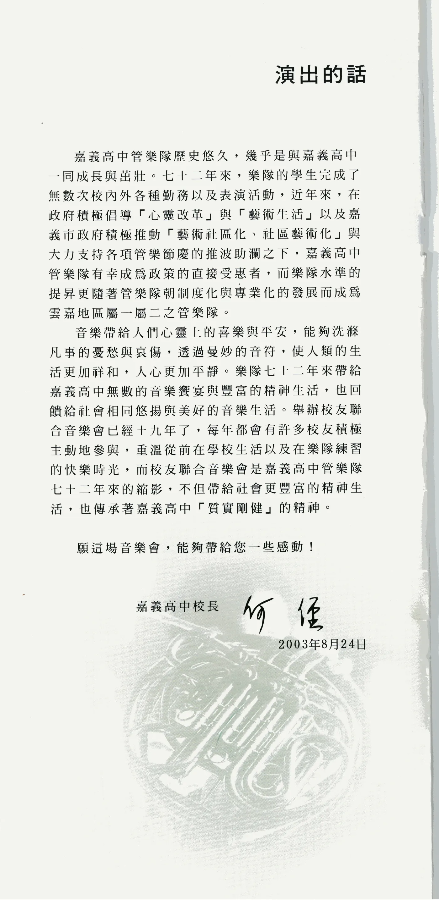
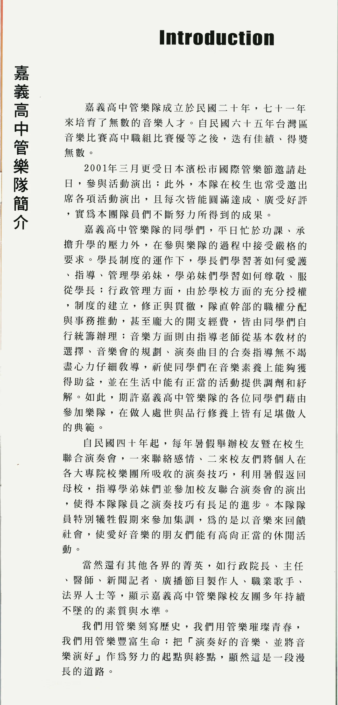
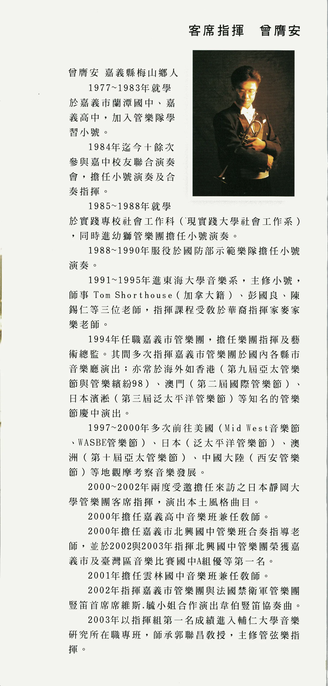
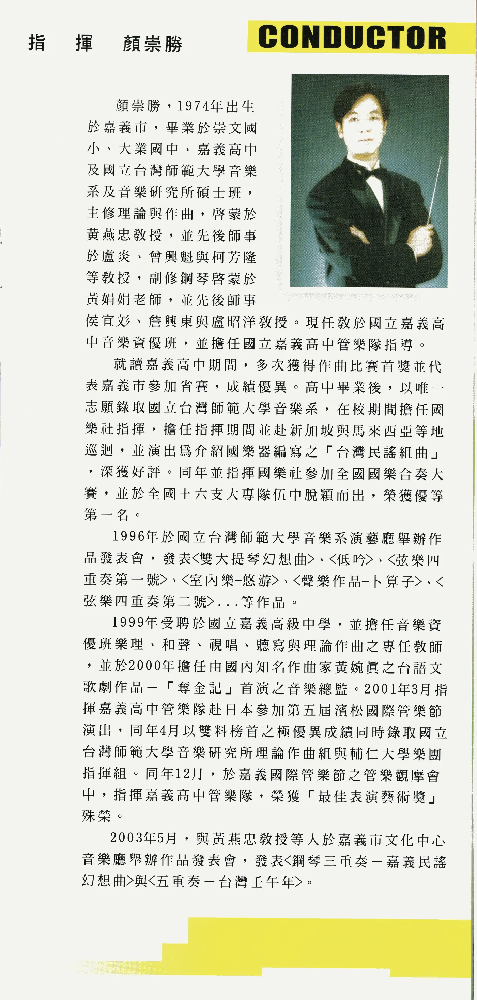
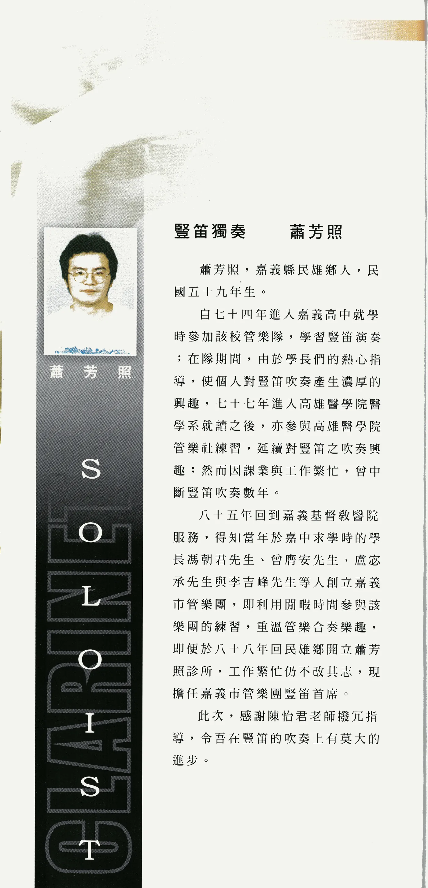
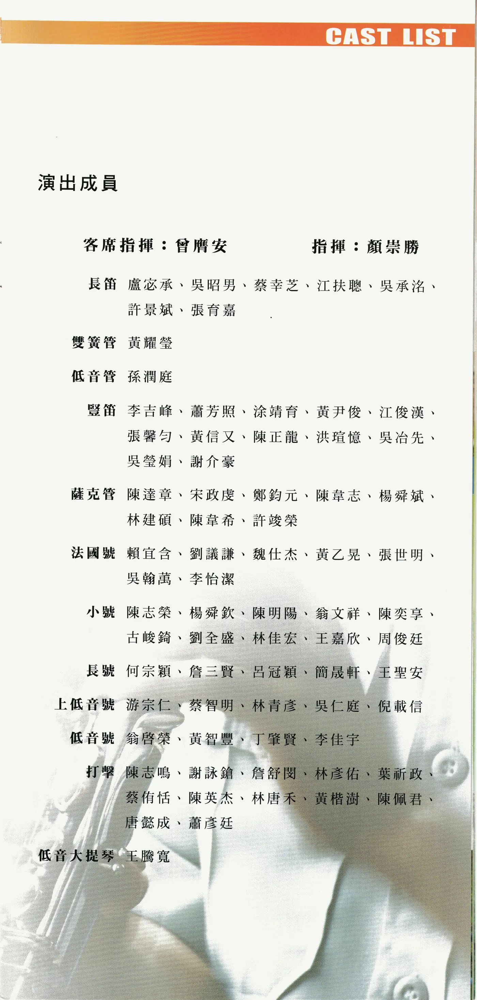
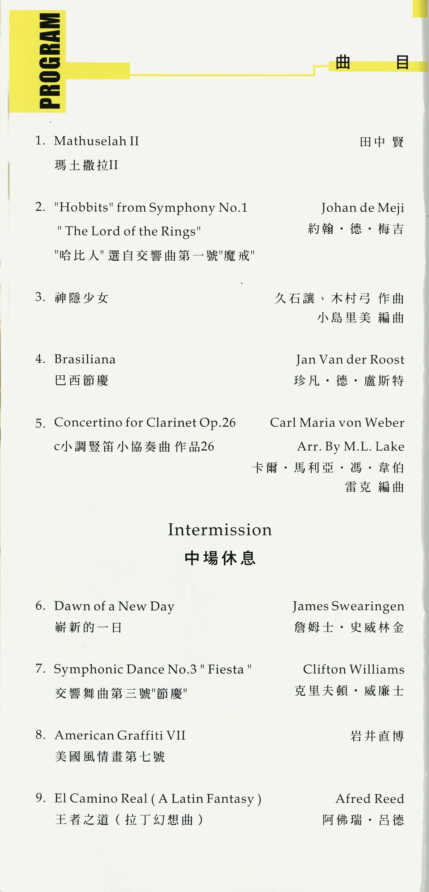
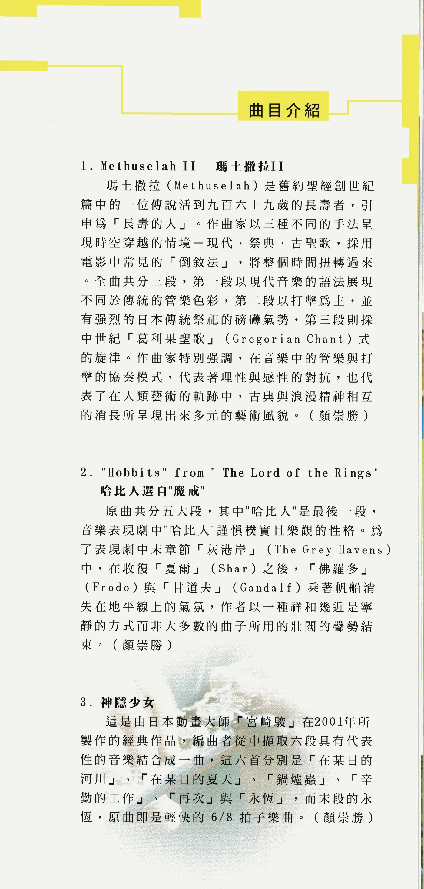
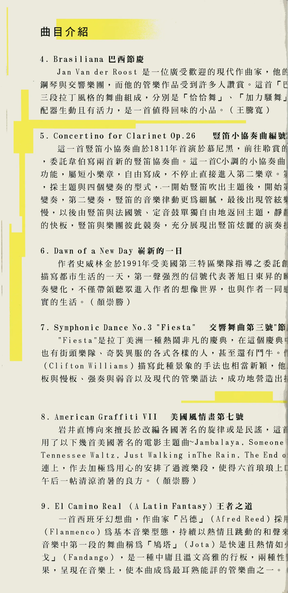
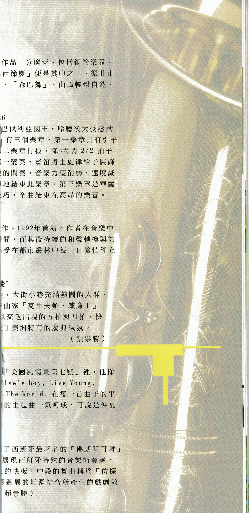
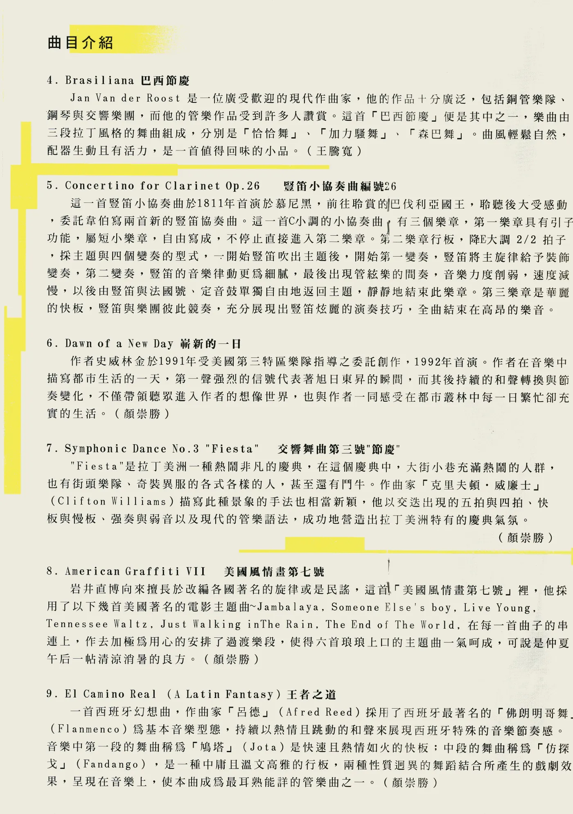
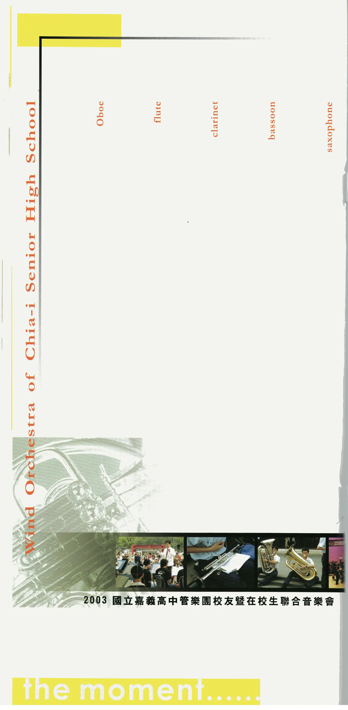
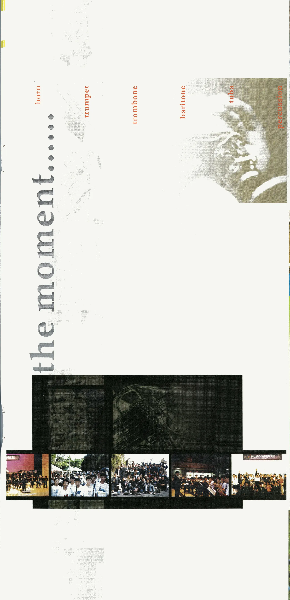
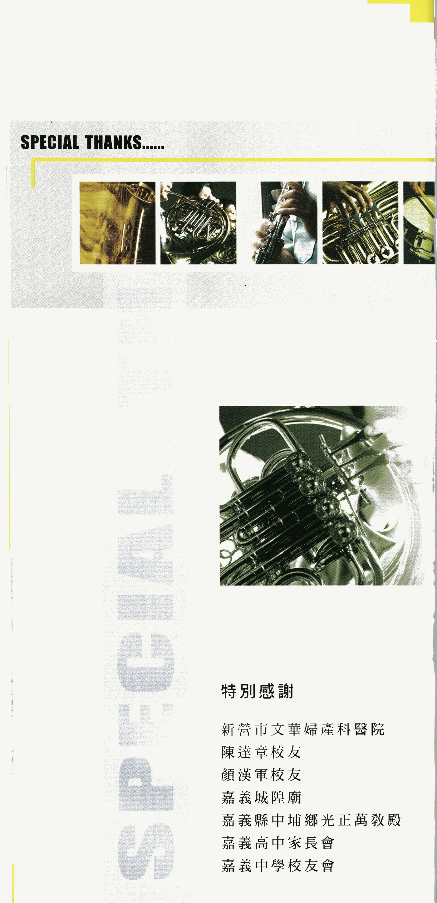
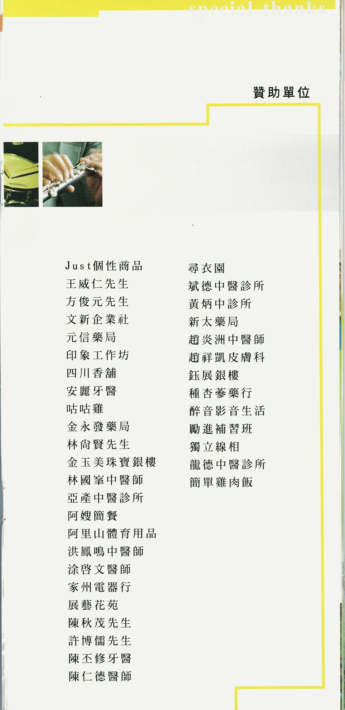
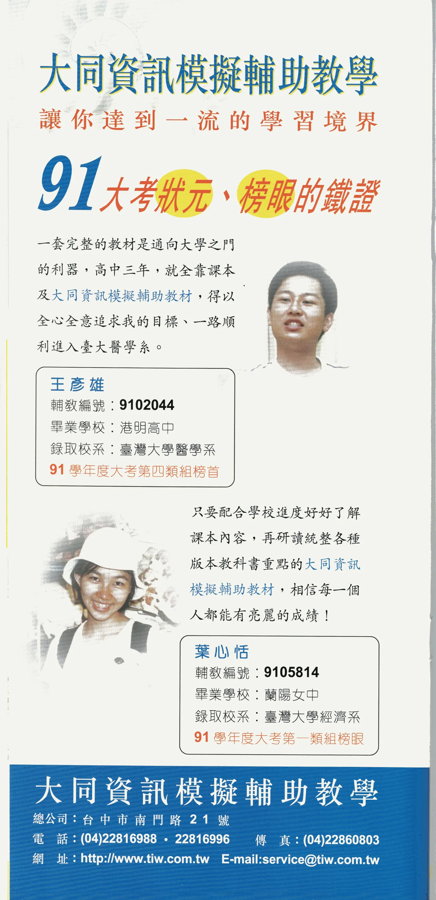
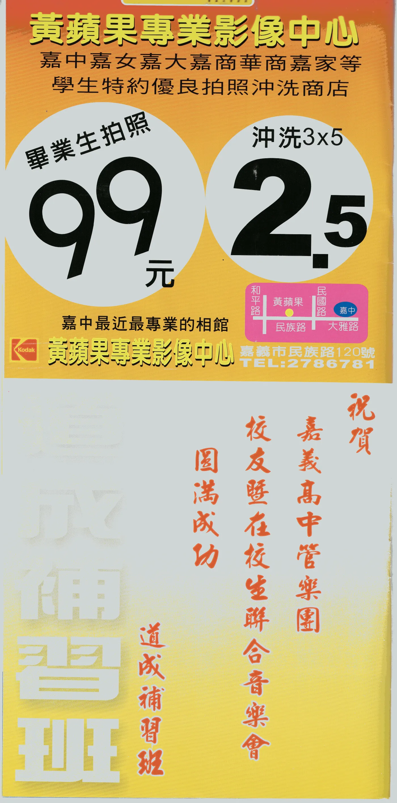
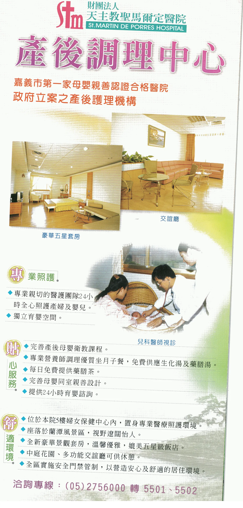
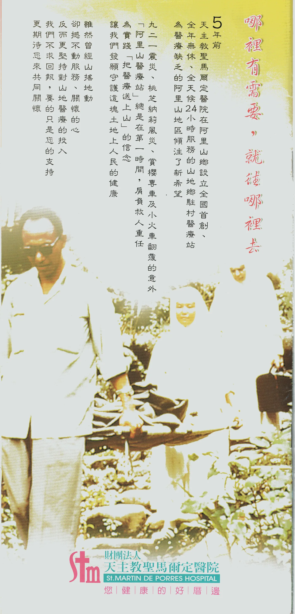
網站補充資訊
以上演出介紹、團隊簡介、人物介紹、曲目與解說、演出成員、贊助與致謝，均按 2003 年紙本節目冊原文轉錄；僅移除紙本分行並調整網站顯示空格，未以今日狀態改寫。
節目冊內部保留當年的用字與異文：第一首曲目在曲目頁印作「Mathuselah II」，曲目介紹頁印作「Methuselah II」；第二首在曲目頁印作「"Hobbits" from Symphony No.1 "The Lord of the Rings"／"哈比人"選自交響曲第一號"魔戒"」，曲目介紹頁則印作「"Hobbits" from "The Lord of the Rings"／哈比人選自"魔戒"」。
曲目頁印作「c小調豎笛小協奏曲作品26」與「王者之道（拉丁幻想曲）」，曲目介紹頁分別印作「豎笛小協奏曲編號26」與「王者之道」；另保留「Johan de Meji」、「岩井直博」、「Afred Reed」、「Flanmenco」、「作去加極為用心」等原印文字。
團隊簡介印作「自民國四十年起，每年暑假舉辦校友暨在校生聯合演奏會」，但同冊封面與〈演出的話〉均標示本次為第十九屆；網站保留兩處原文，不逕行改寫。
封面印作「68個人的努力」；演出成員頁連同客席指揮與指揮共列 75 個姓名。網站保留兩處原始數字與名單，不自行增刪。
節目冊所列「嘉義市文化局音樂廳」，現為嘉義市政府文化局音樂廳。